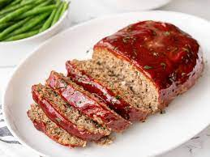

Turkey Meatloaf

Description
Meatloaf is good, but turkey meatloaf is better! This recipe loads up on umami with by sauteing down a mirepoix of vegetables and by using both ketchup and mustard.
Sauteing the vegetables also helps keep the meatloaf from getting soggy... nobody likes soggy meatloaf!
Ingredients
- 3 lb ground turkey
- 1 onion, finely diced
- 4 stalks celery, finely diced
- 3 carrots, finely diced
- 2 eggs
- ketchup and mustard, 2 tsbp each
- 1/2 cup breadcrumbs
Steps
- Saute vegetables until dry and lightly browned, and set aside to cool
- Once vegetables are cool, combine all ingredients in a large bowl and mix until well incorporated
- Grease a 9"x5" bread pan with spray oil, and add mixture into pan
- Bake at 375*F until internal temperature reaches 165*F. Pour fat from pan every 20 minutes until cooked through.
- Allow to rest for at least 10 minutes before serving.
- Eat and enjoy!